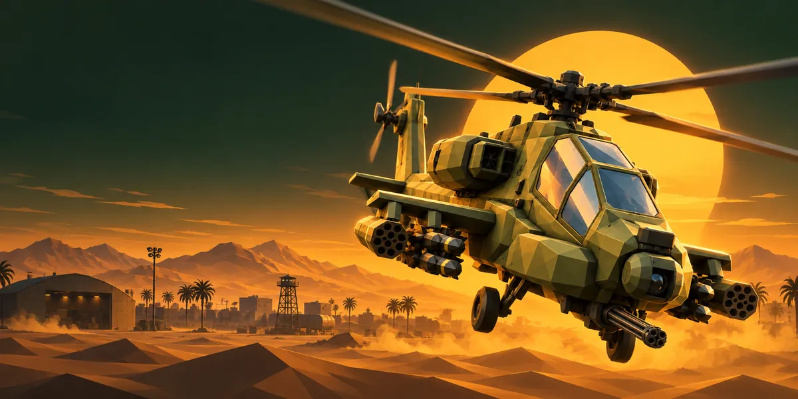

Storm Mantis
A top-down helicopter gunship game for iPhone, iPad and Android.
🚧 In development. Storm Mantis is still being built. Everything on this page describes work in progress. Features, art and story may change before release, and there is no release date yet.

Fly in, hit hard, bring everyone home
You fly an attack helicopter over the republic of Kharsa, a fictional country where an armed movement called the Grey Tide has taken over radar stations, airstrips, fuel depots and villages along the coast.
Each sortie starts on your helipad. You read your orders, take off, and fly into hostile ground. There you destroy key targets, fight off the garrison and winch up people who need rescuing. Then you have to make it back. A mission only counts once you land on the pad again, so you keep an eye on your fuel and armour the whole way.
Features
Hand-built locations
Every region is designed by hand, with its own landscape, defences and ordered chain of missions. You don't fight in random arenas.
Missions with a story
Short conversations before and after each mission link the campaign. You hear from your captain, your guide in the field and your chosen pilot.
Strike and rescue
Missions combine attacking targets, rescuing hostages and searching for hidden people and places.
Fuel and armour count
Long flights and heavy fighting wear you down. Plan your route, pick up supplies, and know when to turn home.
One weapon at a time
Your chain gun never runs dry. Rockets come from pickups and wreckage, and fire until the rack is empty.
Upgrade your gunship
Spend your mission rewards in the hangar on ten upgrades: engine, manoeuvring, armour, fuel tank, cargo bay, rocket capacity, gun fire rate, weapon damage and targeting range and arc. Weapons and field repair kits are sold in the hangar too.
Made for touch
Fly with your left thumb and hold FIRE with your right. Drag off the button to swing the nose and strafe while you shoot. A two-button scheme is also available.
Short sessions
Most sorties take a few minutes, and the game saves at every landing.
Plays offline
Single player with no connection required. Cloud saves and achievements through Game Center and Google Play Games are planned.
The first front: a salt-flat coast
The campaign opens on a quiet stretch of coast: white salt flats, a fishing village, a pumping station and an old airstrip. The Grey Tide holds all of it. This first region teaches you to fly and fight, and every mission there pushes them further back. More regions open up across Kharsa as you go.
Status
- Platforms
- iOS and Android (planned)
- Genre
- Action, top-down helicopter combat
- Mode
- Single player
- Stage
- In development: core gameplay playable, art and content in progress
- Release
- Not yet announced